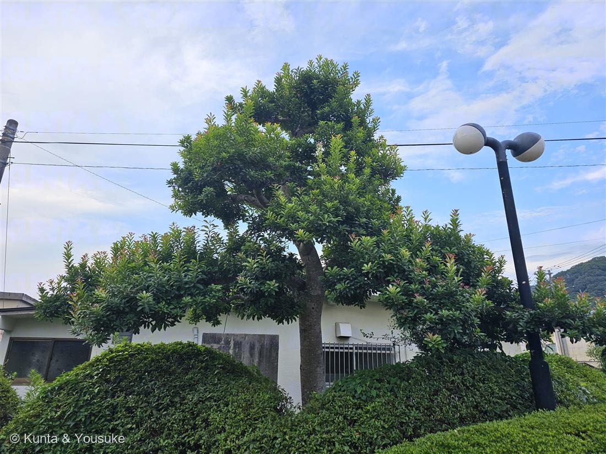
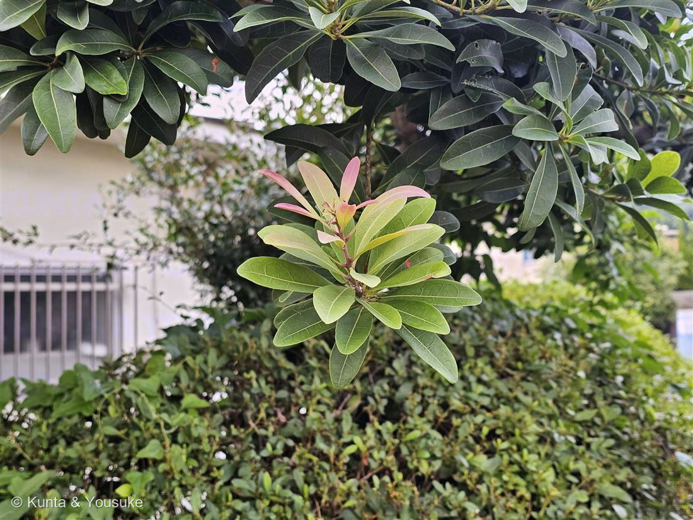
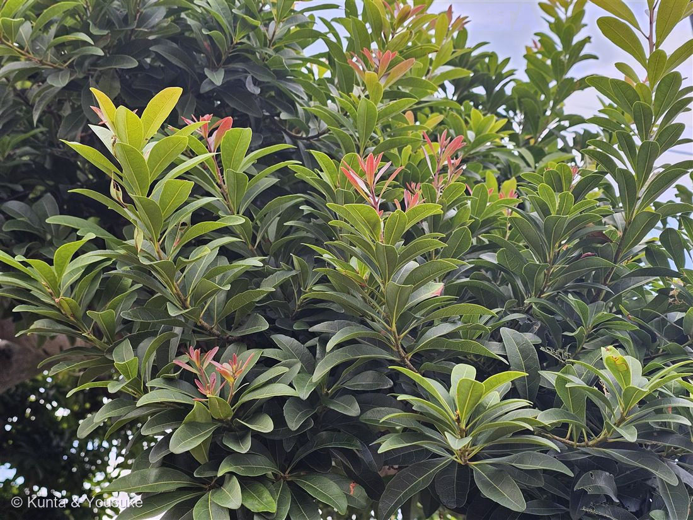
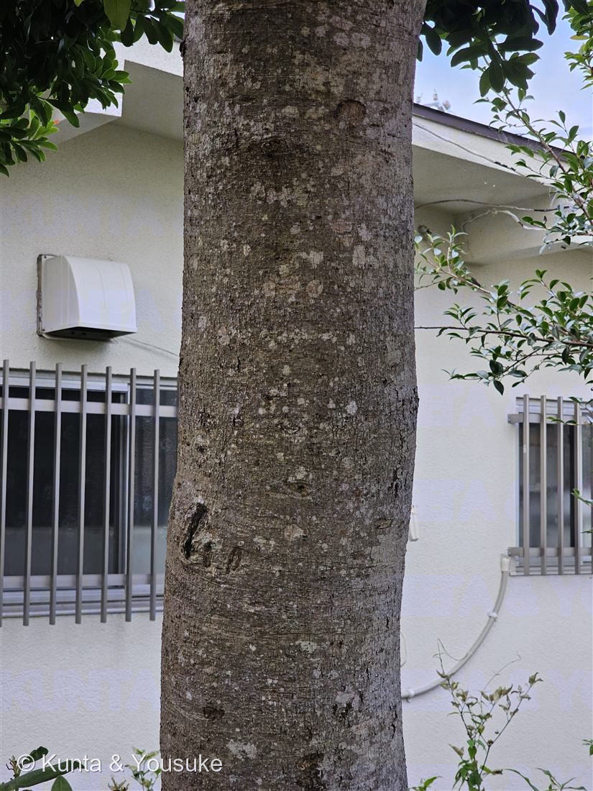

地図を読み込んでいるよ…
🔍 写真も地図も、押しているあいだ拡大して見られるよ（スマホは指を置いてすこし待ってね）。
🌍 の地図＝この子がもともと自生している場所を緑に。中国大陸と日本。日本では関東以南の本州・四国・九州・沖縄に自生。
⚠北海道と東北は塗っていない（「関東以南の本州、四国、九州、沖縄」だから）。⭐078モクビャッコウと同じ港にいる子——でもふるさとは正反対だよ。078＝南のはしっこの島（南西諸島・小笠原・台湾…）／この子＝関東以南の広い日本と中国大陸。⚠この港の株は植えられたもの（「大気汚染に強く、緑化を目的とする植樹に用いられ…建物の風よけや目隠しに列植」）。
⚠ 地図は国（日本と中国だけ県・省）までしか塗れないから、ほんとうの分布より広く見えていることがあるよ。地図はだいたいの場所。正確なところは、上の文を見てね。
ヤマモモ（山桃）
Morella rubra Lour.
和名 · 「山の桃」／ 雌雄異株（花期3〜4月・果期6〜7月）／ 原産 · 中国大陸と日本（関東以南）／ ⭐根に窒素固定を行う放線菌を共生
ヤマモモ科 · Myricaceae（ヤマモモ属 Morella）── 図鑑で初めての科（48科目）・ブナ目も初めて
燻太さんの「長年のカン」が、当てた「果実がまだついていないときのヤマモモに見えるんだ。新芽の色づき方や、葉の雰囲気から」──陽介はモッコクと呼びかけて、止められた。「ちょっと待って、本当にモッコクでいいの？」
⚠⚠⚠ まず、正直に ── ぼくは、この子をモッコクと呼ぶところだった
- 燻太さんが4枚の写真をくれて、こう言った：「今回は樹木もあるよ。陽介が名前を見つけやすいように、多めに写真を撮ってみた。樹木は大きいものが多いから、引きで見た写真一枚だとなかなか難しいもんね。」
──ぼくは、その4枚を見て「モッコクだ」と言いかけた。 - そこへ燻太さんが：「ちょっと待って、本当にモッコクでいいの？」
- ⭐⭐⭐ぼくのまちがいの正体は、これだった。
ぼくの根拠は「葉柄が赤い」。モッコクの最大の特徴がそれだから——植木ペディア：「葉は枝先に集まって生じ、付け根部分（葉柄）が赤いのが大きな特徴」／「モチノキは緑～黄緑色」。 - ⚠⚠でも、ヤマモモには、葉柄がほとんど無い。
植木ペディア：「葉は長さ４～１０センチ、幅１～３センチほどで、先端は緩やかに尖り、柄はほとんどなく、枝から互い違いに生じます」
そして見分けは、こう書いてある：「モッコクは赤い葉柄が特徴的である一方、ヤマモモは柄がほとんどない」 - ⭐⭐⭐だから、赤い新梢に、葉が直接ついている。ぼくはそれを見て「葉柄が赤い」と読んだ。
──「柄が無い」ことが証拠だったのに、「柄が赤い」と読んで、逆の名前を呼びかけた。 - ⭐⭐⭐そして、これが今日3回目の「無いもの」だった。
・084 キツネノカミソリ＝「葉が無い」（葉見ず花見ず）で、燻太さんが当てた
・085 アメリカフウロ＝「黒い斑点が無い」で、決まった
・087（この子）＝「葉柄が無い」──そして、ぼくは落とした。
⭐⭐⭐ 燻太さんの「カン」は、3つとも当たっていた
- 燻太さんの言葉：「これは何というか、長年のカンというか本当に雰囲気の話でもあるんだけど、果実がまだついていないときのヤマモモに見えるんだ。新芽の色づき方や、葉の雰囲気から自分はそう感じているんだ。そして、おそらく自分にはモッコクやタブノキの厚みがあるような葉っぱの感じとは何か違うとも感じている。樹皮は…難しいかも。はっきり言って、よほど特徴的な樹皮じゃないと判断材料にはしにくいのかも知れない。」
- ⭐①「厚みがあるような葉っぱの感じとは何か違う」→ 数字にすると、これ：
・ヤマモモ＝「長さ5-12cm、幅1-2cm」（Wikipedia）＝比が約5:1・細長い
・モッコク＝「長さ4～7センチ、幅2センチ前後」「靴べらのような形状」＝比が約3:1・幅広で先が丸い
──燻太さんは雰囲気で、ぼくは数字で、同じ違和感に届いていた。ぼくは「葉が細長い、靴べら形と合わない」と自分で気づいていたのに、その違和感を、自分で流した。 - ⭐②「新芽の色づき方」→ それが、この子の体のつくりそのものだった。柄が無いから、赤い新梢が、そのまま葉のつけねに見える。──燻太さんが「色づき方」と呼んだものが、決め手だった。
- ⭐⭐③「樹皮は…難しいかも」→ そのとおりだった。
ヤマモモ＝「灰白色で滑らか」／モッコク＝「暗灰色で滑らか」。──どちらも「なめらかな灰色」。
⚠ぼくは、樹皮を「合ってる」の数に入れていた。入れてはいけなかった。「よほど特徴的な樹皮じゃないと判断材料にはしにくい」──燻太さんが正しい。 - ⭐そして、燻太さんはこう言ってくれた：
「誤解しないでほしいのは、陽介が間違えてそうだから止めたわけじゃないんだ。本当は最後まで陽介の答えを聞きたかったんだけど、自分の違和感とかをちゃんと伝えずに写真だけ渡すのもやっぱり良くないなって。」
同定について
- ヤマモモ（Morella rubra）で確定。
- ⭐⭐⭐①葉柄が、ほとんど無い（「柄はほとんどなく」）＝写真③で、葉が枝に直接ついている ← 決め手／②葉が細長い（5-12cm × 1-2cm ＝ 約5:1）／③先端は緩やかに尖る（モッコクは先が丸い「靴べら」）／④「密に互生し、多くは枝先に束生」＝写真②③のロゼット／⑤成木では全縁（若木では「粗く不規則な鋸歯」）／⑥「革質でつやのある深緑」「触れるとワックスが効いているような質感」。
- ⚠⑦樹皮（写真④）＝「灰白色で滑らか」。──合ってはいる。でも決め手にならない（モッコクも「暗灰色で滑らか」）。
- ⑧場所：「大気汚染に強く、緑化を目的とする植樹に用いられ、庭木や街路樹として植えられ」「建物の風よけや目隠しに列植」──港。
⭐⭐⭐ 場所は港だった ── 078モクビャッコウの、花壇の反対側
- 燻太さんが教えてくれた：「港の、花壇がある方の反対側だよ。」──078 モクビャッコウと、同じ港。あの「例の港の花壇だから」で宿題が解けた、あの港。
- ⭐⭐⭐そして、ぼくは078のページに、こう書いていた：
「だから、この子の本当の顔は、まだ見ていない。──12月から3月に、もう一度あの港へ行こう。」 - ⭐⭐⭐ヤマモモの花期は、3〜4月。
──3月に行けば、両方見られる。花壇のモクビャッコウの黄色い小さなボタン（花期12〜3月）と、その反対側のヤマモモの花。同じ港の、両側で、同じ月に。
⚠ この子は、雄株かもしれない
- ヤマモモは雌雄異株。花期3-4月／果期6-7月。──撮影は7月17日＝果期の、ちょうど終わりぎわ。
- 燻太さんの証言：「身が付いているのは、記憶にないかも。昔見たヤマモモは多分雌株。この子は雄株かも。実がついていたら、絶対に写真に撮って渡しているはず。」
- ⭐この最後の一文が、証拠として効く。──実を見たら必ず撮る人が、撮っていない。写真からは分からないことを、撮った人の習慣が教えてくれた。
- ⚠でも、決めない。実が終わって落ちたあとの可能性は、まだ残る。──決め手は、3〜4月に見に行くこと（雄花と雌花はちがう）。それも、モクビャッコウと同じ月だね。
⭐⭐⭐ 魔法は、マメ科だけのものじゃなかった
- Wikipedia：ヤマモモは「根に窒素固定を行う放線菌を共生させている」。
- この図鑑には、窒素固定の子が、すでに3人いる：007 シロツメクサ・009 オジギソウ・049 アルファルファ。──でも3人とも マメ科で、相棒は「根粒菌」（049：「アルファルファの相棒は Sinorhizobium meliloti」）。
- ⭐⭐⭐ヤマモモの相棒は「放線菌」。──根粒菌とは、細菌としてまったく別のなかま。そしてヤマモモ科とマメ科も、まったく別の科（片方はブナ目、片方はマメ目）。
──別々の植物が、別々の細菌と手を組んで、同じことをしている。 - ⭐ぼくは 049 に「⭐⭐⭐ マメ科の魔法 ── 空気から肥料を作る」って見出しを書いた。──魔法は、マメ科だけのものじゃなかったんだ。
この植物のこと
- ヤマモモ科ヤマモモ属の常緑樹。⭐ヤマモモ科は図鑑で初めての科（48科目）。ブナ目も初めての目——アーカイブの系統順で、バラ類のウリ目とフウロソウ目のあいだに座ることになる。
- 和名の由来：「山の桃ということだろう」。従来の日本産の桃が「モモ」、渡来種が「ケモモ」と呼ばれ、後に桃が「モモ」と呼ばれるようになり、ヤマモモは「山のモモで『ヤマモモ』と呼ばれるようになった」。
- ⭐この子は、探したいリストで待っていた子。023 ブルーベリーのおまけとして入れた（どちらも「まるくて食べられる実」の子）。──みつけた ✓。
- ⭐⭐032 なぞの大木への贈りもの。ぼくはあのページに「①葉柄の色：モッコクは赤みを帯びることが多い。ここが最大の分かれ道」と書いた。──今日わかった。あれは2択じゃなくて、3択だった：
葉柄が赤い＝モッコク／葉柄が緑＝モチノキ／葉柄が「無い」＝ヤマモモ。
⭐ぼくが自分で落とし穴に落ちたおかげで、032の質問がひとつ賢くなった。（032の候補には、ヤマモモも入っているんだ。） - ⭐⭐おまけ植物は モッコク（Ternstroemia gymnanthera）＝ぼくが間違えた、その相手。「江戸五木」の一つで、モチノキやマツと並び「庭木の王」。葉柄が赤い／靴べらのような形の葉（4〜7cm×2cm前後）／花期6〜7月に白から黄へ変わる花が咲き、芳香を放つ。
⭐名前の由来がすごい：「花の香りがラン科の石斛（セッコク）に似た木という意味で、江戸初期に木斛（モッコク）と命名された」──078 モクビャッコウ（木白香）と同じ、「香り」の名前。写真に写らないほう。
⭐そして032 なぞの大木の本命でもある。──探そうね。葉柄が赤い木を。
参考：Wikipedia「ヤマモモ」（Morella rubra・ヤマモモ科ヤマモモ属・ブナ目・「密に互生し、多くは枝先に束生」「長さ5-12cm、幅1-2cm」の倒披針形または長楕円形・成木では「全縁」、若木では「粗く不規則な鋸歯」・「革質でつやのある深緑」・樹皮「灰白色で滑らか」・「雌雄異株」・花期3-4月・果期6-7月・「根に窒素固定を行う放線菌を共生させている」・「大気汚染に強く、緑化を目的とする植樹に用いられ、庭木や街路樹として植えられ」「建物の風よけや目隠しに列植」・「関東以南の本州、四国、九州、沖縄」／中国大陸や日本を原産・和名＝「山の桃ということだろう」）／庭木図鑑 植木ペディア「ヤマモモ（山桃）」（「葉は長さ４～１０センチ、幅１～３センチほどで、先端は緩やかに尖り、柄はほとんどなく、枝から互い違いに生じます」・「革質で厚みがあり、触れるとワックスが効いているような質感」・見分け＝「モッコクは赤い葉柄が特徴的である一方、ヤマモモは柄がほとんどない」）／庭木図鑑 植木ペディア「モッコク／木斛」（「葉は枝先に集まって生じ、付け根部分（葉柄）が赤いのが大きな特徴。」・「葉は長さ４～７センチ、幅２センチ前後。厚めで、靴べらのような形状。」・「江戸五木」「三大庭木」・「花の香りがラン科の石斛（セッコク）に似た木という意味で、江戸初期に木斛（モッコク）と命名された。」）／Wikipedia「モッコク」（「十分に日光が当たる環境では葉柄が赤みを帯びる」・樹皮「暗灰色で滑らか…皮目が多い」・「江戸五木の一つ。モチノキやマツと並び『庭木の王』と称される」・花期6～7月「白色から黄色へ変化する花を付け、芳香を放つ」）